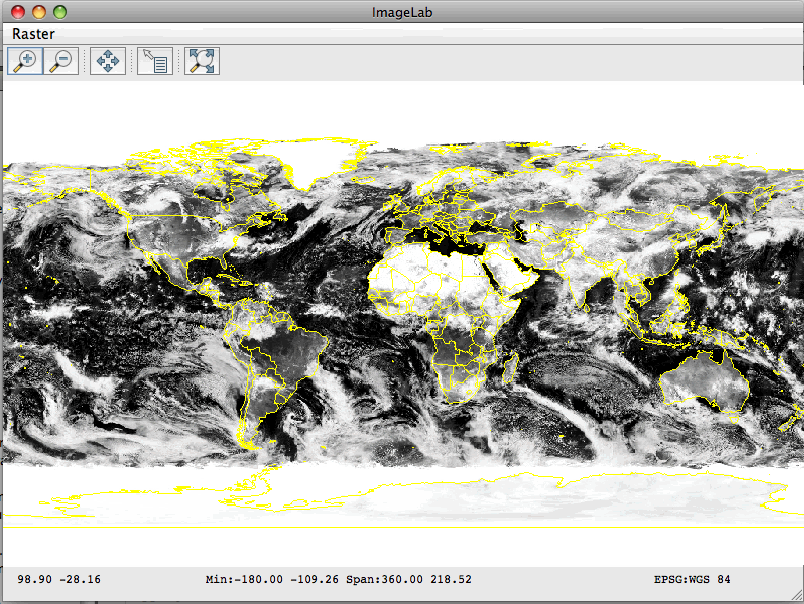

Image Tutorial¶
Welcome¶
Welcome to Geospatial for Java. This tutorial is aimed at Java developers who are new to geospatial and would like to get started.
Please ensure you have your IDE set up with access to the GeoTools jars (either through maven or a directory of Jar files). For those of you using Maven we will start off each section with the dependencies required.
This workbook is once again code first giving you a chance to try the concepts out in a Java program and then read on for more information if you have any questions.
This workbook covers the handling of GridCoverages (in the rest of computing these are known as rasters or bitmaps). The idea is that a coverage completely covers the surface of a map with no gaps forming a surface. A grid coverage is a special case of a coverage in which all the features end up as small rectangles on the surface of the earth.
This idea is so similar to our concept of pixels we end up using a lot of the same file formats to represent a grid coverage in our computing systems.
This workbook is featured as part of OSDC2011, FOSS4G 2010 and FOSS4G 2009 conferences.
Jody Garnett
Jody Garnett is the lead architect for the uDig project; and on the steering committee for GeoTools; GeoServer and uDig. Taking the role of geospatial consultant a bit too literally Jody has presented workshops and training courses on every continent (except Antarctica). Jody Garnett is an employee of LISAsoft.
Michael Bedward
Michael Bedward is a researcher with the NSW Department of Environment and Climate Change and an active contributor to the GeoTools users’ list. He has a particularly wide grasp of all the possible mistakes one can make using GeoTools.
Image Lab Application¶
In the earlier examples we looked at reading and displaying shapefiles. For
ImageLab.java we are
going to add raster data into the mix by displaying a three-band global satellite image,
and overlaying it with country boundaries from a shapefile.
Please ensure your pom.xml includes the following.
We have already encountered most of these dependencies in earlier examples. The new modules we have added are gt-geotiff which allows us to read raster map data from a GeoTIFF file and gt-image which allows us to read an Image+World format file set (e.g. jpg + jpw).
<dependencies>
<dependency>
<groupId>org.geotools</groupId>
<artifactId>gt-shapefile</artifactId>
<version>${geotools.version}</version>
</dependency>
<dependency>
<groupId>org.geotools</groupId>
<artifactId>gt-swing</artifactId>
<version>${geotools.version}</version>
</dependency>
<dependency>
<groupId>org.geotools</groupId>
<artifactId>gt-epsg-hsql</artifactId>
<version>${geotools.version}</version>
</dependency>
<dependency>
<groupId>org.geotools</groupId>
<artifactId>gt-geotiff</artifactId>
<version>${geotools.version}</version>
</dependency>
<dependency>
<groupId>org.geotools</groupId>
<artifactId>gt-image</artifactId>
<version>${geotools.version}</version>
</dependency>
<dependency>
<groupId>org.geotools</groupId>
<artifactId>gt-wms</artifactId>
<version>${geotools.version}</version>
</dependency>
</dependencies>
- Please create the file ImageLab.java and copy and paste in the following code:
package org.geotools.tutorial.raster;
import java.awt.Color;
import java.awt.event.ActionEvent;
import java.io.File;
import java.io.IOException;
import java.util.ArrayList;
import java.util.List;
import javax.swing.JMenu;
import javax.swing.JMenuBar;
import javax.swing.JOptionPane;
import org.geotools.coverage.GridSampleDimension;
import org.geotools.coverage.grid.GridCoverage2D;
import org.geotools.coverage.grid.io.AbstractGridFormat;
import org.geotools.coverage.grid.io.GridCoverage2DReader;
import org.geotools.coverage.grid.io.GridFormatFinder;
import org.geotools.data.FileDataStore;
import org.geotools.data.FileDataStoreFinder;
import org.geotools.data.Parameter;
import org.geotools.data.simple.SimpleFeatureSource;
import org.geotools.factory.CommonFactoryFinder;
import org.geotools.map.FeatureLayer;
import org.geotools.map.GridReaderLayer;
import org.geotools.map.Layer;
import org.geotools.map.MapContent;
import org.geotools.map.StyleLayer;
import org.geotools.styling.ChannelSelection;
import org.geotools.styling.ContrastEnhancement;
import org.geotools.styling.RasterSymbolizer;
import org.geotools.styling.SLD;
import org.geotools.styling.SelectedChannelType;
import org.geotools.styling.Style;
import org.geotools.styling.StyleFactory;
import org.geotools.swing.JMapFrame;
import org.geotools.swing.action.SafeAction;
import org.geotools.swing.data.JParameterListWizard;
import org.geotools.swing.wizard.JWizard;
import org.geotools.util.KVP;
import org.opengis.filter.FilterFactory2;
import org.opengis.style.ContrastMethod;
public class ImageLab {
private StyleFactory sf = CommonFactoryFinder.getStyleFactory();
private FilterFactory2 ff = CommonFactoryFinder.getFilterFactory2();
private JMapFrame frame;
private GridCoverage2DReader reader;
public static void main(String[] args) throws Exception {
ImageLab me = new ImageLab();
me.getLayersAndDisplay();
}
Parameters¶
One thing that has been a mystery until now is how the DataStore wizards are created. The wizards are created from a description of the parameters needed when connecting.
We are going to use these same facilities now to prompt the user:
We will use JParameterListWizard, to prompt for the raster file and the shapefile that will be displayed over it:
/** * Prompts the user for a GeoTIFF file and a Shapefile and passes them to the displayLayers * method */ private void getLayersAndDisplay() throws Exception { List<Parameter<?>> list = new ArrayList<Parameter<?>>(); list.add(new Parameter<File>("image", File.class, "Image", "GeoTiff or World+Image to display as basemap", new KVP( Parameter.EXT, "tif", Parameter.EXT, "jpg"))); list.add(new Parameter<File>("shape", File.class, "Shapefile", "Shapefile contents to display", new KVP(Parameter.EXT, "shp"))); JParameterListWizard wizard = new JParameterListWizard("Image Lab", "Fill in the following layers", list); int finish = wizard.showModalDialog(); if (finish != JWizard.FINISH) { System.exit(0); } File imageFile = (File) wizard.getConnectionParameters().get("image"); File shapeFile = (File) wizard.getConnectionParameters().get("shape"); displayLayers(imageFile, shapeFile); }
Observer the use of Parameter objects for each input file. The arguments passed to the Parameter constructor are:
| key: | an identifier for the Parameter |
|---|---|
| type: | the class of the object that the Parameter refers to |
| title: | a title which the wizard will use to label the text field |
| description: | a brief description which the wizard will display below the text field |
| metadata: | a Map containing additional data for the Parameter - in our case this is one or more file extensions. |
Displaying the map¶
To display the map on screen we create a MapContent, add the image and the shapefile to it, and pass it to a JMapFrame.
- Rather than using the static JMapFrame.showMap method, as we have in previous examples, we create a map frame and customize it by adding a menu to choose the image display mode.
/**
* Displays a GeoTIFF file overlaid with a Shapefile
*
* @param rasterFile
* the GeoTIFF file
* @param shpFile
* the Shapefile
*/
private void displayLayers(File rasterFile, File shpFile) throws Exception {
AbstractGridFormat format = GridFormatFinder.findFormat( rasterFile );
reader = format.getReader(rasterFile);
// Initially display the raster in greyscale using the
// data from the first image band
Style rasterStyle = createGreyscaleStyle(1);
// Connect to the shapefile
FileDataStore dataStore = FileDataStoreFinder.getDataStore(shpFile);
SimpleFeatureSource shapefileSource = dataStore
.getFeatureSource();
// Create a basic style with yellow lines and no fill
Style shpStyle = SLD.createPolygonStyle(Color.YELLOW, null, 0.0f);
// Set up a MapContent with the two layers
final MapContent map = new MapContent();
map.setTitle("ImageLab");
Layer rasterLayer = new GridReaderLayer(reader, rasterStyle);
map.addLayer(rasterLayer);
Layer shpLayer = new FeatureLayer(shapefileSource, shpStyle);
map.addLayer(shpLayer);
// Create a JMapFrame with a menu to choose the display style for the
frame = new JMapFrame(map);
frame.setSize(800, 600);
frame.enableStatusBar(true);
//frame.enableTool(JMapFrame.Tool.ZOOM, JMapFrame.Tool.PAN, JMapFrame.Tool.RESET);
frame.enableToolBar(true);
JMenuBar menuBar = new JMenuBar();
frame.setJMenuBar(menuBar);
JMenu menu = new JMenu("Raster");
menuBar.add(menu);
menu.add( new SafeAction("Grayscale display") {
public void action(ActionEvent e) throws Throwable {
Style style = createGreyscaleStyle();
if (style != null) {
((StyleLayer) map.layers().get(0)).setStyle(style);
frame.repaint();
}
}
});
menu.add( new SafeAction("RGB display") {
public void action(ActionEvent e) throws Throwable {
Style style = createRGBStyle();
if (style != null) {
((StyleLayer) map.layers().get(0)).setStyle(style);
frame.repaint();
}
}
});
// Finally display the map frame.
// When it is closed the app will exit.
frame.setVisible(true);
}
- Note that we are creating a Style for each of the map layers:
- A greyscale Style for the initial image display, created with a method that we’ll examine next
- A simple outline style for the shapefile using the SLD utility class
- Creating a greyscale Style prompts the user for the image band to display; and then generates a style accordingly.
/**
* Create a Style to display a selected band of the GeoTIFF image
* as a greyscale layer
*
* @return a new Style instance to render the image in greyscale
*/
private Style createGreyscaleStyle() {
GridCoverage2D cov = null;
try {
cov = reader.read(null);
} catch (IOException giveUp) {
throw new RuntimeException(giveUp);
}
int numBands = cov.getNumSampleDimensions();
Integer[] bandNumbers = new Integer[numBands];
for (int i = 0; i < numBands; i++) { bandNumbers[i] = i+1; }
Object selection = JOptionPane.showInputDialog(
frame,
"Band to use for greyscale display",
"Select an image band",
JOptionPane.QUESTION_MESSAGE,
null,
bandNumbers,
1);
if (selection != null) {
int band = ((Number)selection).intValue();
return createGreyscaleStyle(band);
}
return null;
}
/**
* Create a Style to display the specified band of the GeoTIFF image
* as a greyscale layer.
* <p>
* This method is a helper for createGreyScale() and is also called directly
* by the displayLayers() method when the application first starts.
*
* @param band the image band to use for the greyscale display
*
* @return a new Style instance to render the image in greyscale
*/
private Style createGreyscaleStyle(int band) {
ContrastEnhancement ce = sf.contrastEnhancement(ff.literal(1.0), ContrastMethod.NORMALIZE);
SelectedChannelType sct = sf.createSelectedChannelType(String.valueOf(band), ce);
RasterSymbolizer sym = sf.getDefaultRasterSymbolizer();
ChannelSelection sel = sf.channelSelection(sct);
sym.setChannelSelection(sel);
return SLD.wrapSymbolizers(sym);
}
To display color we need to use a slightly more complex Style that specifies which bands in the grid coverage map to the R, G and B colors on screen.
The method checks the image to see if its bands (known as sample dimensions) have labels indicating which to use. If not, we just use the first three bands and hope for the best !
/**
* This method examines the names of the sample dimensions in the provided coverage looking for
* "red...", "green..." and "blue..." (case insensitive match). If these names are not found
* it uses bands 1, 2, and 3 for the red, green and blue channels. It then sets up a raster
* symbolizer and returns this wrapped in a Style.
*
* @return a new Style object containing a raster symbolizer set up for RGB image
*/
private Style createRGBStyle() {
GridCoverage2D cov = null;
try {
cov = reader.read(null);
} catch (IOException giveUp) {
throw new RuntimeException(giveUp);
}
// We need at least three bands to create an RGB style
int numBands = cov.getNumSampleDimensions();
if (numBands < 3) {
return null;
}
// Get the names of the bands
String[] sampleDimensionNames = new String[numBands];
for (int i = 0; i < numBands; i++) {
GridSampleDimension dim = cov.getSampleDimension(i);
sampleDimensionNames[i] = dim.getDescription().toString();
}
final int RED = 0, GREEN = 1, BLUE = 2;
int[] channelNum = { -1, -1, -1 };
// We examine the band names looking for "red...", "green...", "blue...".
// Note that the channel numbers we record are indexed from 1, not 0.
for (int i = 0; i < numBands; i++) {
String name = sampleDimensionNames[i].toLowerCase();
if (name != null) {
if (name.matches("red.*")) {
channelNum[RED] = i + 1;
} else if (name.matches("green.*")) {
channelNum[GREEN] = i + 1;
} else if (name.matches("blue.*")) {
channelNum[BLUE] = i + 1;
}
}
}
// If we didn't find named bands "red...", "green...", "blue..."
// we fall back to using the first three bands in order
if (channelNum[RED] < 0 || channelNum[GREEN] < 0 || channelNum[BLUE] < 0) {
channelNum[RED] = 1;
channelNum[GREEN] = 2;
channelNum[BLUE] = 3;
}
// Now we create a RasterSymbolizer using the selected channels
SelectedChannelType[] sct = new SelectedChannelType[cov.getNumSampleDimensions()];
ContrastEnhancement ce = sf.contrastEnhancement(ff.literal(1.0), ContrastMethod.NORMALIZE);
for (int i = 0; i < 3; i++) {
sct[i] = sf.createSelectedChannelType(String.valueOf(channelNum[i]), ce);
}
RasterSymbolizer sym = sf.getDefaultRasterSymbolizer();
ChannelSelection sel = sf.channelSelection(sct[RED], sct[GREEN], sct[BLUE]);
sym.setChannelSelection(sel);
return SLD.wrapSymbolizers(sym);
}
}
- Please note that the above technique (checking colour bands) is specific to RGB images. While this is easy for a simple color image; it can be harder for things like satellite images where none of the bands quite line up with what human eyes see.
Running the application¶
If you need some sample data to display you can download the uDig sample dataset which contains:
- clouds.jpg
- countries.shp
- When you run the program you will first see the wizard dialog prompting your for the image and shapefile.
{kind=link}
The initial map display shows the image as a greyscale, single-band view.
Experiment with displaying different bands in greyscale and swapping to the RGB display.
{kind=link}
Extra things to try¶
- Modify the file prompt wizard, or the menu, to allow additional shapfiles to be overlaid onto the image.
- Add a map layer table to the JMapFrame using frame.enableLayerTable(true) so that you can toggle the visibility of the layers.
- Advanced: Experiment with Styles for the raster display: e.g. contrast enhancement options; display based on ranges of image band values
- Advanced: You can also use GeoTools to work with raster information being served up from a remote Web Map Service.
package org.geotools.tutorial.wms;
import java.net.URL;
import java.util.List;
import javax.swing.JFrame;
import javax.swing.JOptionPane;
import org.geotools.data.ows.Layer;
import org.geotools.data.wms.WebMapServer;
import org.geotools.map.MapContent;
import org.geotools.map.WMSLayer;
import org.geotools.swing.JMapFrame;
import org.geotools.swing.wms.WMSChooser;
import org.geotools.swing.wms.WMSLayerChooser;
/**
* This is a Web Map Server "quickstart" doing the minimum required to display
* something on screen.
*/
public class WMSLab extends JFrame {
/**
* Prompts the user for a wms service, connects, and asks for a layer and then
* and displays its contents on the screen in a map frame.
*/
public static void main(String[] args) throws Exception {
// display a data store file chooser dialog for shapefiles
URL capabilitiesURL = WMSChooser.showChooseWMS();
if( capabilitiesURL == null ){
System.exit(0); // canceled
}
WebMapServer wms = new WebMapServer( capabilitiesURL );
List<Layer> wmsLayers = WMSLayerChooser.showSelectLayer( wms );
if( wmsLayers == null ){
JOptionPane.showMessageDialog(null, "Could not connect - check url");
System.exit(0);
}
MapContent mapcontent = new MapContent();
mapcontent.setTitle( wms.getCapabilities().getService().getTitle() );
for( Layer wmsLayer : wmsLayers ){
WMSLayer displayLayer = new WMSLayer(wms, wmsLayer );
mapcontent.addLayer(displayLayer);
}
// Now display the map
JMapFrame.showMap(mapcontent);
}
}
Raster Data¶
Grid Coverage¶
Support for raster data is provided by the concept of a GridCoverage. As programmers we are used to working with raster data in the form of bitmapped graphics such as JPEG, GIF and PNG files.
On the geospatial side of things there is the concept of a Coverage. A coverage is a collection of spatially located features. Informally, we equate a coverage with a map (in the geographic rather than the programming sense).
A GridCoverage is a special case of Coverage where the features are rectangles forming a grid that fills the area of the coverage. In our Java code we can use a bitmapped graphic as the backing data structure for a GridCoverage together with additional elements to record spatial bounds in a specific coordinate reference system.
There are many kinds of grid coverage file formats. Some of the most common are:
- world plus image
A normal image format like jpeg or png that has a side-car file describing where it is located as well as a prj sidecar file defining the map projection just like a shapefile uses.
Please note that alothough the jpeg format is common due to small download size; the performance at runtime is terrible as the entire image needs be read into memory. Formats such as TIFF do not have this limitation,
- Geotiff
A normal tiff image that has geospatial information stored in the image metadata fields. This is generally a safe bet for fast performnace; especially if it has been prepaired with an internal overlay (which can be used when zoomed out) or internal tiling (allowing for fast pans when zoomed in.
Performs best when your computer has faster disks than CPUs.
- JPEG2000
The sequel to jpeg that uses wavelet compression to handle massive images. The file format also supports metadata fields that can be used to store geospatial information.
This format performs best when you have more faster CPUs than disk access.
There are also more exotic formats such as ECW and MRSID that can be supported if you have installed the imageio-ext project into your JRE.
Web Map Server¶
Another source of imagery is a Web Map Server (WMS). The Web Map Server specification is defined by the Open Geospatial Consortium ‐ an industry body set up to encourage collaboration on this sort of thing.
At a basic level we can fetch information from a WMS using a GetMap operation:
http://localhost:8080/geoserver/wms?bbox=-130,24,-66,50&styles=population&Format=image/png&request=GetMap&layers=topp:states&width=550&height=250&srs=EPSG:4326
The trick is knowing what parameters to fill in for “ layer ” and “ style ” when making one of these requests.
The WMS Service offers a GetCapabilities document that describes what layers are available and wha other operations like GetMap are available to work on those layers.
GeoTools has a great implementation to help out here ‐ it can parse that capabilities document for a list of layers, the supported image formats and so forth.
URL url = url = new URL("http://www2.dmsolutions.ca/cgi-bin/mswms_gmap?VERSION=1.1.0&REQUEST=GetCapabilities");
WebMapServer wms = new WebMapServer(url);
WMSCapabilities capabilities = wms.getCapabilities();
// gets all the layers in a flat list, in the order they appear in
// the capabilities document (so the rootLayer is at index 0)
List layers = capabilities.getLayerList();
WebMapServer class also knows how to set up a GetMap request for several different version of the WMS standard.
GetMapRequest request = wms.createGetMapRequest();
request.setFormat("image/png");
request.setDimensions("583", "420"); //sets the dimensions to be returned from the server
request.setTransparent(true);
request.setSRS("EPSG:4326");
request.setBBox("-131.13151509433965,46.60532747661736,-117.61620566037737,56.34191403281659");
GetMapResponse response = (GetMapResponse) wms.issueRequest(request);
BufferedImage image = ImageIO.read(response.getInputStream());